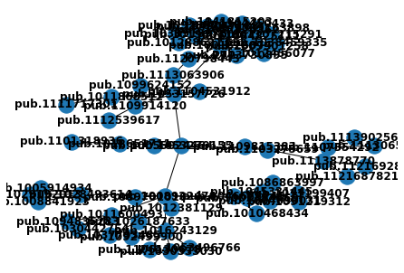

NetworkX tests¶
[1]:
!pip install dimcli -U --quiet
import dimcli
import json
dimcli.login()
dsl = dimcli.Dsl()
|████████████████████████████████| 122kB 2.8MB/s eta 0:00:01
..running Google Colab auto-init..
DimCli v0.5.9.2 - Succesfully connected to <https://app.dimensions.ai> (method: dsl.ini file)
[ ]:
from google.colab import files
[57]:
!pip install pyvis --quiet
from pyvis.network import Network
Collecting pyvis
Downloading https://files.pythonhosted.org/packages/7d/7e/df88acbe771afb1fe69b64516d2a56be46befab3e04cfd4258dc6063f96a/pyvis-0.1.7.0-py3-none-any.whl
Requirement already satisfied: networkx>=1.11 in /usr/local/lib/python3.6/dist-packages (from pyvis) (2.4)
Requirement already satisfied: jinja2>=2.9.6 in /usr/local/lib/python3.6/dist-packages (from pyvis) (2.10.3)
Requirement already satisfied: ipython>=5.3.0 in /usr/local/lib/python3.6/dist-packages (from pyvis) (5.5.0)
Requirement already satisfied: decorator>=4.3.0 in /usr/local/lib/python3.6/dist-packages (from networkx>=1.11->pyvis) (4.4.0)
Requirement already satisfied: MarkupSafe>=0.23 in /usr/local/lib/python3.6/dist-packages (from jinja2>=2.9.6->pyvis) (1.1.1)
Requirement already satisfied: pickleshare in /usr/local/lib/python3.6/dist-packages (from ipython>=5.3.0->pyvis) (0.7.5)
Requirement already satisfied: prompt-toolkit<2.0.0,>=1.0.4 in /usr/local/lib/python3.6/dist-packages (from ipython>=5.3.0->pyvis) (1.0.18)
Requirement already satisfied: simplegeneric>0.8 in /usr/local/lib/python3.6/dist-packages (from ipython>=5.3.0->pyvis) (0.8.1)
Requirement already satisfied: pygments in /usr/local/lib/python3.6/dist-packages (from ipython>=5.3.0->pyvis) (2.1.3)
Requirement already satisfied: traitlets>=4.2 in /usr/local/lib/python3.6/dist-packages (from ipython>=5.3.0->pyvis) (4.3.3)
Requirement already satisfied: setuptools>=18.5 in /usr/local/lib/python3.6/dist-packages (from ipython>=5.3.0->pyvis) (41.4.0)
Requirement already satisfied: pexpect; sys_platform != "win32" in /usr/local/lib/python3.6/dist-packages (from ipython>=5.3.0->pyvis) (4.7.0)
Requirement already satisfied: wcwidth in /usr/local/lib/python3.6/dist-packages (from prompt-toolkit<2.0.0,>=1.0.4->ipython>=5.3.0->pyvis) (0.1.7)
Requirement already satisfied: six>=1.9.0 in /usr/local/lib/python3.6/dist-packages (from prompt-toolkit<2.0.0,>=1.0.4->ipython>=5.3.0->pyvis) (1.12.0)
Requirement already satisfied: ipython-genutils in /usr/local/lib/python3.6/dist-packages (from traitlets>=4.2->ipython>=5.3.0->pyvis) (0.2.0)
Requirement already satisfied: ptyprocess>=0.5 in /usr/local/lib/python3.6/dist-packages (from pexpect; sys_platform != "win32"->ipython>=5.3.0->pyvis) (0.6.0)
Installing collected packages: pyvis
Successfully installed pyvis-0.1.7.0
[ ]:
import networkx as nx
[ ]:
seed = [ "pub.1053279155" , "pub.1103275659"]
q = """search publications where reference_ids in [{}] return publications[id+doi+title+year]"""
results = {}
for p in seed:
data = dsl.query(q.format(json.dumps(p)))
results[p] = [x['id'] for x in data.publications]
[3]:
results
[3]:
{'pub.1053279155': ['pub.1103275659',
'pub.1012651711',
'pub.1005502446',
'pub.1008922470',
'pub.1053157726'],
'pub.1103275659': ['pub.1113878770', 'pub.1109815383', 'pub.1107354292']}
Wrapping this up into a function
[ ]:
from dimcli.shortcuts import dslquery
def get_citations(pubids, level=1):
q = """search publications where reference_ids in [{}] return publications[id+doi+title+year]"""
results = {}
for p in pubids:
data = dslquery(q.format(json.dumps(p)))
results[p] = [x['id'] for x in data.publications]
if level == 1:
return results
else:
temp = []
for x in results.values():
temp += x
temp = list(set(temp))
return dict(results, **get_citations(temp, level-1))
def build_graph(dict_strut):
G = nx.Graph()
for x in dict_strut:
G.add_node(x, seed=True)
for y in dict_strut[x]:
G.add_node(y)
G.add_edge(x, y, level =1 )
return G
[38]:
get_citations(['pub.1053279155'], 2)
Returned Publications: 5 (total = 5)
Returned Publications: 3 (total = 3)
Returned Publications: 0
Returned Publications: 1 (total = 1)
Returned Publications: 6 (total = 6)
Returned Publications: 8 (total = 8)
[38]:
{'pub.1005502446': [],
'pub.1008922470': ['pub.1089701016',
'pub.1026187633',
'pub.1002394460',
'pub.1012381129',
'pub.1046653745',
'pub.1016243129',
'pub.1011600493',
'pub.1028493614'],
'pub.1012651711': ['pub.1101318936'],
'pub.1053157726': ['pub.1109914120',
'pub.1113063906',
'pub.1099624152',
'pub.1104531912',
'pub.1011868512',
'pub.1001626874'],
'pub.1053279155': ['pub.1103275659',
'pub.1012651711',
'pub.1005502446',
'pub.1008922470',
'pub.1053157726'],
'pub.1103275659': ['pub.1113878770', 'pub.1109815383', 'pub.1107354292']}
[52]:
G = build_graph(get_citations(['pub.1053279155'], 3))
Returned Publications: 5 (total = 5)
Returned Publications: 3 (total = 3)
Returned Publications: 0
Returned Publications: 1 (total = 1)
Returned Publications: 6 (total = 6)
Returned Publications: 8 (total = 8)
Returned Publications: 1 (total = 1)
Returned Publications: 0
Returned Publications: 1 (total = 1)
Returned Publications: 0
Returned Publications: 0
Returned Publications: 0
Returned Publications: 1 (total = 1)
Returned Publications: 2 (total = 2)
Returned Publications: 0
Returned Publications: 4 (total = 4)
Returned Publications: 0
Returned Publications: 4 (total = 4)
Returned Publications: 4 (total = 4)
Returned Publications: 3 (total = 3)
Returned Publications: 3 (total = 3)
Returned Publications: 3 (total = 3)
Too Many Requests for the Server. Sleeping for 30 seconds and then retrying.
Returned Publications: 16 (total = 16)
Returned Publications: 2 (total = 2)
[54]:
len(G)
[54]:
62
[ ]:
net = Network()
net.from_nx(G)
[ ]:
net.show("test.html")
[ ]:
files.download("test.html")
Aspects to get into
recursion using sleep
recursion with multi-ID query
customizing the chart eg with title etc
saving intermediate data to a dataframe, so that it can be reused later or even saved as CSV
NetworkX¶
Adding two nodes with same ID results always in one node
[ ]:
G = nx.Graph()
[ ]:
for x in results:
G.add_node(x, seed=True)
for y in results[x]:
G.add_node(y)
G.add_edge(x, y, level =1 )
[22]:
G.nodes()
[22]:
NodeView(('pub.1053279155', 'pub.1103275659', 'pub.1012651711', 'pub.1005502446', 'pub.1008922470', 'pub.1053157726', 'pub.1113878770', 'pub.1109815383', 'pub.1107354292'))
[21]:
sorted(G.nodes(),key=str)
[21]:
['pub.1005502446',
'pub.1008922470',
'pub.1012651711',
'pub.1053157726',
'pub.1053279155',
'pub.1103275659',
'pub.1107354292',
'pub.1109815383',
'pub.1113878770']
[ ]:
import matplotlib.pyplot as plt
[55]:
nx.draw(G, with_labels=True, font_weight='bold')

Adding edges will also results in nodes
[ ]:
G = nx.Graph()
G.add_edge(1, 2, weight=1)
len(G.nodes()) # => 2
can add alll nodes in one go - duplicates will be removed
[ ]:
G.add_nodes_from(concepts['concept'].to_list())